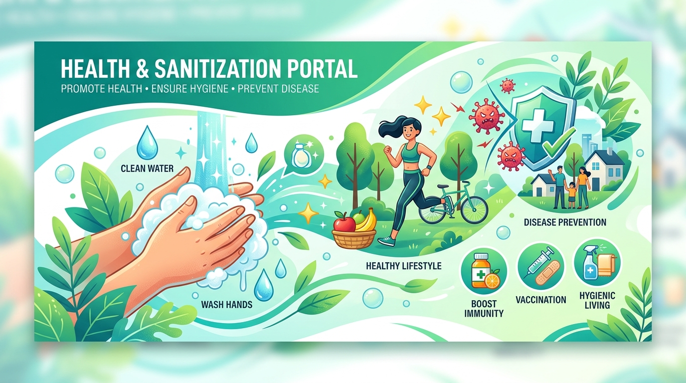

Practicing proper hand hygiene, sanitization, and safe drinking water management is essential for preventing disease transmission and protecting families and communities.
Scrub Duration
Boil Temperature
Pathogen Removal

Safe water handling reduces gastrointestinal infections by up to 60%
Understanding water contamination sources and implementing reliable household purification techniques to guarantee safe drinking water.
Pathogens such as Vibrio cholerae, E. coli, and Salmonella typhi intrude through untreated sewage and agricultural runoff, causing acute waterborne illnesses.
Pesticides, nitrates, lead, and industrial effluent seep into groundwater, posing long-term organ toxicity and health hazards without proper filtration.
Storing purified water in open buckets or dipping unwashed hands/cups re-contaminates safe drinking water before consumption.
Bring water to a continuous rolling boil for at least 1 full minute. Boiling destroys bacteria, viruses, and parasites effectively without chemical additives.
Gold StandardUse household ceramic, activated carbon, or RO filters to trap particulate matter, heavy metals, microplastics, and protozoan cysts.
Particle RemovalWater treatment tablets or approved sodium hypochlorite solutions disinfect large storage tanks, maintaining persistent antimicrobial residual protection.
DisinfectionUltraviolet purifiers emit UV-C light that inactivates bacterial & viral DNA, rendering microbes harmless without altering water taste or mineral content.
DNA InactivationStore purified water in narrow-necked containers fitted with dispensing taps. Keep vessels covered and elevated off the floor.
Re-contamination BarrierClick on any step node in the pipeline below to see how water transitions from natural source to safe household consumption.
Answer 4 quick educational questions to evaluate your household water treatment and storage habits.
Master the complete 20-second hand scrubbing technique recommended by global public health authorities.
Comprehensive guidelines for personal hygiene, environmental cleanliness, and disease vector elimination.
Proper 20-second hand scrubbing before meals, after restroom usage, and after touching contaminated surfaces removes 99% of germs.
Explore Hand HygieneRegular disinfection of door handles, light switches, counter tops, and mobile devices stops touch-contact viral transmission.
Explore SurfacesWashing raw produce under clean water, thorough cooking, and separate storage of raw meat prevents severe foodborne illnesses.
Explore Food HygieneUsing clean sanitary toilets, closing toilet lids before flushing, and maintaining sanitary septic tanks stops fecal-oral pathogen cycles.
Explore Sanitation3-bin household waste segregation (Organic, Dry, Hazardous) prevents fly breeding, groundwater pollution, and foul odors.
Explore Waste RulesDraining stagnant rainwater pools around homes prevents mosquito breeding grounds responsible for Dengue and Malaria outbreaks.
Explore SurroundingsClick any health topic below to view detailed breakdown on causes, spread mechanisms, warning signs, and prevention.
Cholera, Typhoid, Hepatitis A, and Dysentery. Learn how water contamination occurs and how to prevent outbreaks.
Click for BreakdownInfluenza, viral colds, and airborne pathogens. Protocols for mask usage, cough etiquette, and room ventilation.
Click for BreakdownPreventing cross-contamination, safe cooking temperatures, and washing fresh produce to avoid gastroenteritis.
Click for BreakdownDaily bathing, dental care, skin protection, and sanitary grooming habits that protect immune health.
Click for BreakdownSolid waste disposal, drainage maintenance, and keeping community spaces free from bacterial breeding spots.
Click for BreakdownDengue, Malaria, and Chikungunya prevention. Eliminating standing water where mosquitoes breed.
Click for BreakdownProject scope metrics showcasing the learning modules available on this public health platform.
Share your feedback, report observations on health awareness content, or suggest new hygiene topics. Every review helps improve our educational outreach.
Thank you for helping us improve our health awareness portal. Your review is now live below.
Tell us how HygienePulse helped your awareness or classroom learning.